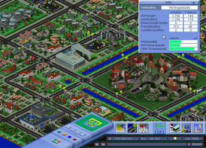
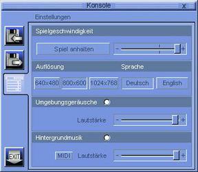

MOBILITY
Dieser Artikel wurde für die folgenden Ubuntu-Versionen getestet:
Ubuntu 16.04 Xenial Xerus
Zum Verständnis dieses Artikels sind folgende Seiten hilfreich:
 MOBILITY
MOBILITY 
 ist ein Verkehrssimulations-Spiel, welches auf wissenschaftlichen Modellen von Raum- und Verkehrsplanern basiert. Ziel ist es eine Stadt zu planen, auf- und auszubauen sowie einen funktionierenden öffentlichen Personennahverkehr einzurichten und somit ein attraktives Lebensumfeld zu gestalten. Dies unter Berücksichtigung einer ausgewogenen Balance zwischen Ökologie und Ökonomie.
ist ein Verkehrssimulations-Spiel, welches auf wissenschaftlichen Modellen von Raum- und Verkehrsplanern basiert. Ziel ist es eine Stadt zu planen, auf- und auszubauen sowie einen funktionierenden öffentlichen Personennahverkehr einzurichten und somit ein attraktives Lebensumfeld zu gestalten. Dies unter Berücksichtigung einer ausgewogenen Balance zwischen Ökologie und Ökonomie.
Version 1.0 wurde mit Unterstützung der DaimlerChrysler AG, der Rhein-Main-Verkehrsverbund GmbH (RMV) und der Verkehrsverbund Rhein-Ruhr GmbH (VRR) gefördert, von der Bauhaus-Universität Weimar unterstützt und vom Bundesministerium für Bildung und Forschung entwickelt. Diese stand als Freeware zur Verfügung. Seit Version 2.0 ist das Spiel als Shareware verfügbar. Hier ist lediglich das Speichern des Spielstands und eine größere Auflösung unmöglich.
|  |
| Spielszene |
Installation¶
Die aktuelle Linuxversion des Spiels kann über tucows.com bzw. holarse-linuxgaming.de  heruntergeladen und anschließend entpackt [1] werden (z.B. nach ~/Spiele/MOBILITY). Über
heruntergeladen und anschließend entpackt [1] werden (z.B. nach ~/Spiele/MOBILITY). Über Start_Mobility kann man das Spiel aus dem Installationsverzeichnis heraus starten [2]. Auf Wunsch einen Menüeintrag [3] vornehmen.
Vollversion¶
Nachdem man den Lizenzschlüssel erworben hat, wird die Seriennummer per E-Mail zugesendet. Diese wird in der Konfigurationsdatei eingetragen.
|  |
| Konsole |
Konfiguration¶
Über das Computersymbol kann das Einstellungsmenü aufgerufen werden. Neben der Spielgeschwindigkeit, der Spielsprache und der Auflösung können Audioeinstellungen angepasst werden.
MOBILITY.INI¶
Die Konfigurationsdatei ist im Installationsverzeichnis zu finden und kann mit einem Editor [4] bearbeitet werden.
| Konfigurationsdatei | |
| Parameter | Beschreibung |
SERIAL=WIKIUB-UNTU-USER-SRDE | Diese Zeile enthält die Seriennummer (hier: WIKIUB-UNTU-USER-SRDE). |
LANGUAGE=0 | Spielsprache ändern: 0 bzw. 1 |
FULLSCREEN=0 | Vollbild- 0 / Fenstermodus 1 |
AUFLOESUNGX=800 | Auflösung |
AUFLOESUNGY=600 | |
Handbuch¶
Ein Handbuch kann von der Entwicklerseite als PDF-Datei heruntergeladen werden.
Szenarien¶
Auf der Internetseite stehen Spielstände zum Herunterladen bereit. Das Archiv Szenarios.zip entpacken [1] und den Inhalt in den Ordner SaveGame innerhalb des Installationsverzeichnisses verschieben.
Problemlösung¶
 mit
mit Tastenkürzel¶
| Tastenkürzel | |
| Taste(n) | Beschreibung |
| F1 | Spielstand laden |
| F2 | Einstellungen |
| F4 | Schnellspeichern |
| F5 | Laden |
| Esc | Spiel pausieren / beenden / zurück |
Eine Auflistung weiterer Kürzel ist dem Handbuch zu entnehmen.

- Erstellt mit Inyoka
-
 2004 – 2017 ubuntuusers.de • Einige Rechte vorbehalten
2004 – 2017 ubuntuusers.de • Einige Rechte vorbehalten
Lizenz • Kontakt • Datenschutz • Impressum • Serverstatus -
Serverhousing gespendet von